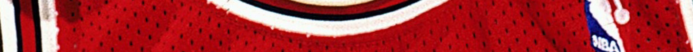

1989–90
Confirmed Population
1
Publicly Documented
0
Privately Verified
1
Population totals may include privately held examples not publicly disclosed at the request of ownership.
RESEARCH IN PROGRESS
Games Reviewed:
• Preseason: 0 of 0
• Regular Season: 28 of 82
• Postseason: 0 of 0
Last Updated: March 1, 2026
Population Summary
| Style | Confirmed | Public | Status |
|---|---|---|---|
| Home | 0 | 0 | ⏳ |
| Away | 1 | 0 | ⏳ |
Population reflects distinct season-worn garments (jerseys or full uniform sets) confirmed through research and documentation.

AWAY

In game image during the 1989-90 season (Ken Levine).
This jersey presents as a multi-game worn sand-knit, from an era of Michael climb to dominance.
Research & Provenance
This jersey is a privatly held example - it is well documented and verifed to a multi-game photomatch).
- Owned by a private collector.
- Total documented photo-matched games: 1+ / undisclosed.
Documentation
Photo Match Details
- Photo-Matched: Yes
- Games Photo-Matched: Undiclosed
- Photo-Matched By: MJA